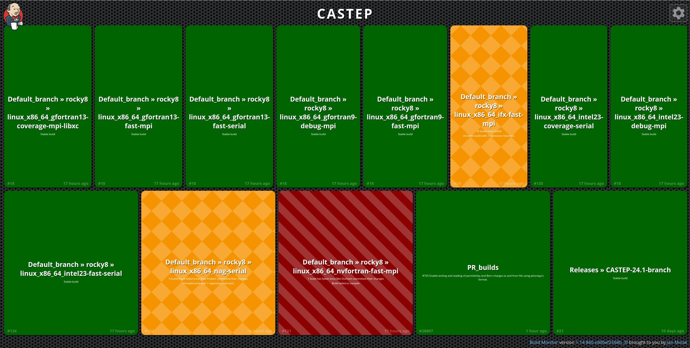
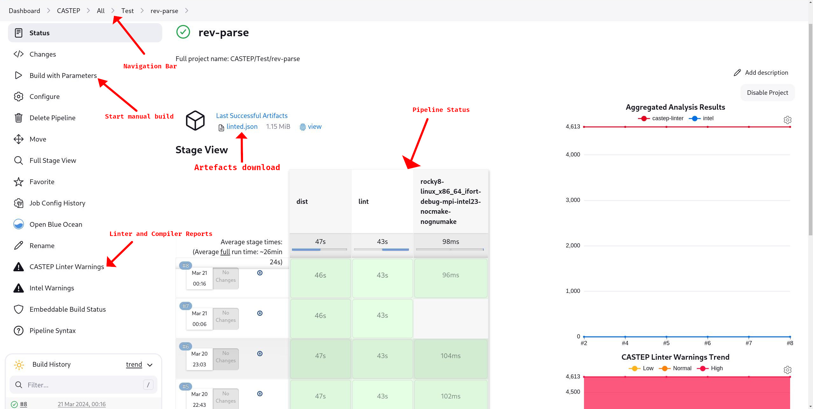
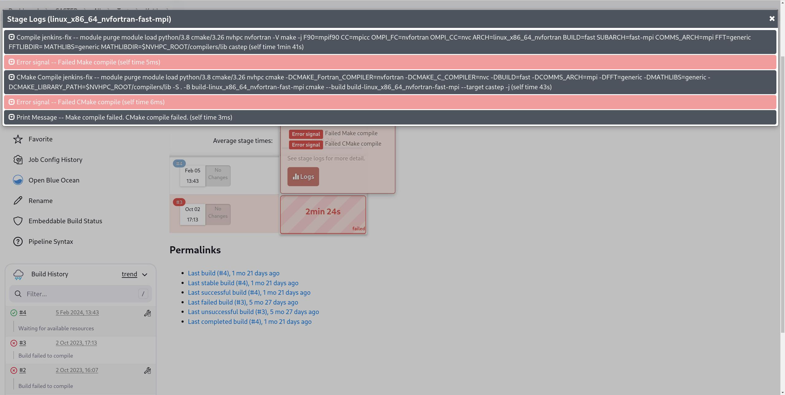
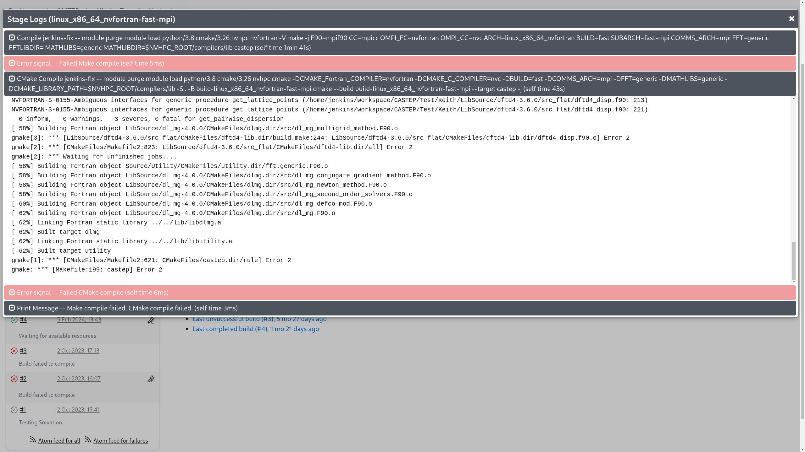
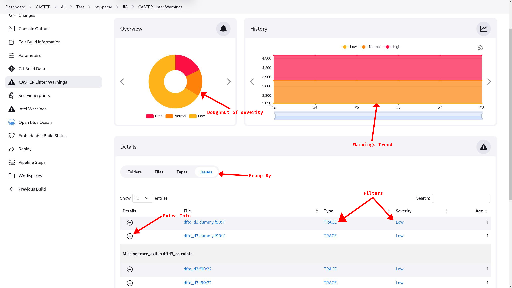
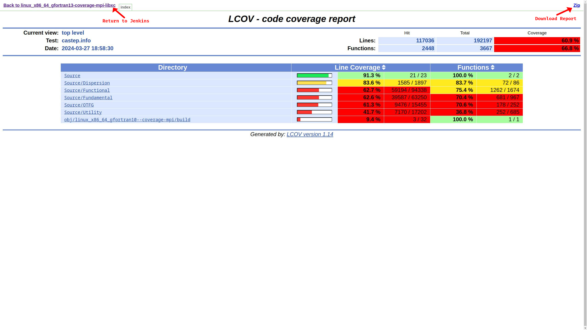

CI Testing System
Overview
Notice
The following document assumes you have access to both the CASTEP source and the ANVIL CI system.
The CASTEP CI system is divided into 3 phases:
- Rapid Response (BitBucket)
- A short set of tests run whenever a PR is created or pushed to.
- CASTEP PR Tests (Jenkins)
- A more substantial set of tests run whenever a PR is created or pushed to.
- CASTEP Default Tests (Jenkins)
- A set of tests run whenever default or a release branch is merged to.
The main CASTEP continuous integration (CI) system is a Jenkins instance run on the ANVIL service.
The main CASTEP Jenkins instance is available at:
https://anvil.softeng-support.ac.uk/jenkins/job/CASTEP/view/all/
Going through the Jenkins Dashboard will take you to the waterfall diagram landing page.
Note
The ANVIL service is an STFC-cloud managed system and requests to register will be considered by them on a case-by-case basis and are out of control of the CASTEP team.
Personal Pipeline
For the purposes of development testing you can request a personal pipeline in order to be able to rapidly test in the variety of environments under which the main CASTEP testing is performed.
This is required for e.g. modifying the Jenkinsfile
Access to this pipeline will require an ANVIL account and a reasonable cause for the request.
Navigating Jenkins
Waterfall diagram
The landing page from the Jenkins dashboard is the Waterfall diagram which shows
a quick display of the most recent results for the default, Release and
PR_builds pipelines.
Tip
To enable accessibility options including text-scale and colourblind mode, select the gear in the top-right.

The colours represent the status of the pipeline:
| Colour | Colourblind | Meaning |
|---|---|---|
| Green | Plain | Previous run succeeded. |
| Orange | Diamonds | Previous run failed tests, but built successfully. |
| Red | Diagonal stripe | Previous run failed to build one or more pipelines successfully. |
Note
The text below the pipeline describes how long the pipeline has been failing as well as the extent of the failure.
Clicking on any of the pipeline names will take you to the pipeline menu for that pipeline.
Pipeline Menu
The pipeline menu is the display of the status for any single pipeline. It has a number of important displays and buttons.
The figure below highlights these.

Note
The side-bar is dynamic and the options available to you may not match those in the figure above for any particular pipeline. For example, this pipeline has not generated a coverage report.
Navigation Bar
The navigation bar allows you to look at other pipelines, each name is a link to that section/level of the Jenkins.
Warning
The "CASTEP" level button will take you to the Waterfall landing page. In order to get to the top-level CASTEP dashboard, select "All" instead.
When viewing linter and warning reports the navigation bar will also display the currently applied filters in the order they were applied and serves as the way to remove those filters.
Pipeline Status
The pipeline status shows the previous run statuses. It is possible to click on any stage, and then logs to get a step-by-step breakdown of the issue. Any step that failed will be coloured pink rather than the usual grey.

It is then possible to click on the tab to expand the console output for that particular step. Generally in the case of:
-
- builds
- this will be the
Compilestep above the failure.
-
- tests
- this will be the
Diffstep below the failure.

Note
Clicking the step name will take you to a different page with a full-page display of the output of that step.
Tip
Tabs collapse when another is selected.
Reports
During a Jenkins run, several "reports" may be created and made available in the side-bar of a pipeline that generates them.
Linting and Compiler Warnings
Following a build, Jenkins will collect the compiler warnings issued during a build along with, if a linting phase is run, the resulting linter issues into a report accessible through the side-bar.
Warning
The warning collection will take the set of warnings from the first build using any of the following compilers:
- gfortran
- ifort
- nag
This means that if the first item for each compiler in builds_to_run (see
manual parametrised runs) is not an opt=debug
build, you may miss most warnings.

The reports allow the types of issues to be selected and filtered:
-
They can be grouped and sorted by clicking the appropriate buttons above the main table and table entries.
-
The doughnut of severity is actually a clickable filter to filter to warnings of that level!
-
The
+icon to the left of the issue in "Issues" "group by" mode allows you to expand the issue to get more detail. -
Selecting the file from the "File" column displays annotated source, however, see the issue below.
Known issue
Due to the relatively large sizes of CASTEP source files, while selecting the
file:line link will take you to an annotated copy of the source at the point
of the issue in question, the rendering engine tends to bog down machines
causing browsers to struggle or fail to load the annotated file.
Test Coverage Report
Whenever a coverage build is run (i.e. with either the ifort or gfortran
compiler and opt=coverage), Jenkins will accumulate the coverage reports and
make them accessible in the side-bar.

Known issue
Due to current security settings on ANVIL the ifort reports are not
viewable through this view and must be downloaded to be viewed.
FORD API Documentation
As part of the full build of the default branch following a merge, Jenkins
will trigger a FORD API
documentation build.
The results of this build are accessible from the side-bar of the
CASTEP > All > Default_branch > docs-trigger pipeline.
Build Artefacts
During a Jenkins run, various files will be preserved, making them available to download.
Currently the artefacts that are preserved are:
- Linting reports
- Failed test data
- Coverage reports
- FORD Documentation
Some artefacts are available for download at the top of the pipeline menu above the previous runs.
For interactive reports (coverage and FORD), when opened the download button is available in the top-right.
Jenkins Pipelines
The tests run in the course of CI are controlled through the Jenkinsfile in
the root CASTEP folder.
Default builds run
In general, the default set of configurations are run on rocky8 using:
- Intel 23
- Ifx 24
- GCC 13
- GCC 9
- NAG 7.1
- NVFortran 23.7
with different combinations of arch, comms and external libraries attempting
to cover a broad scope of possible use-cases.
Note
All default or manual builds will also run a test of the correctness and
completeness of the source distribution GNU make and CMake dist targets.
Default build keys
At time of writing, the default build keys are:
rocky8;linux_x86_64_ifort;debug;mpi#intel23
rocky8;linux_x86_64_gfortran;debug;mpi#gcc9
rocky8;linux_x86_64_nag;debug;serial
rocky8;linux_x86_64_gfortran10;coverage;mpi#gcc13-libxc
rocky8;linux_x86_64_ifort;coverage;serial#intel23-nocmake
rocky8;linux_x86_64_ifort;fast;serial#intel23-nocmake
rocky8;linux_x86_64_gfortran;fast;mpi#gcc9-nocmake
rocky8;linux_x86_64_gfortran10;fast;mpi#gcc13-nocmake
rocky8;linux_x86_64_gfortran10;fast;serial#gcc13-nocmake
rocky8;linux_x86_64_nvfortran;fast;mpi#nogrimmed4
rocky8;linux_x86_64_ifx;fast;mpi#ifx24-nocmake
PR Builds run
When a PR is opened, BitBucket triggers a small subset of the Jenkins tests.
These builds only run the quick subset of the tests.
Note
If a PR only affects parts of CASTEP which are not tested, such as documentation
or separate tools, it should have [skiptest] or [skipanvil] in the PR title.
If a PR is not yet ready for testing, it should have [wip] or [draft] in the PR title.
These will prevent the PR from triggering the Jenkins build saving resources.
Default PR builds
These builds are (at the time of writing):
rocky8;linux_x86_64_nag;intermediate;serial#nocmake
rocky8;linux_x86_64_gfortran10;fast;mpi#gcc13-fftw-nocmake
rocky8;linux_x86_64_ifort;intermediate;serial#intel23-nocmake
rocky8;linux_x86_64_nvfortran;fast;serial#nogrimmed4-nognumake
However, these are subject to change.
Manual Parametrised Runs
If you wish to start a run with a particular subset of configurations or tests, it is possible to start a parametrised run manually.
From the Jenkins interface select the pipeline to run the build on (see
Personal Pipelines) and select Build with
Parameters. This allows one to manually specify the components to use.
Parameters
The parameters are as follows:
| Parameter | Meaning | Default |
|---|---|---|
repo_method |
Define method to retrieve repo. Should not need to be changed. |
https |
repo_host |
URL to repository if externally hosted. Should not need to be changed. |
bitbucket.org |
repo_path |
URL Path to workspace and repository. 1 | castep/castep |
branch |
Branch to build and test. 2 | default |
builds_to_run |
Builds to run as list of build keys. | see: Default builds list |
tests_to_run |
List of tests to run. | all except quick |
baseURL |
Slack URL to post mesasge to. N.B. Set to empty string to not send message. |
https://corecastepdevelopers.slack.com/services/hooks/ |
lint |
Run or skip linting stage. | true |
1 The command run as part of the checkout will be roughly equivalent to:
2 Jenkins will automatically push the run's status to the HEAD commit of the
branch being tested at the time of the run.
Warning
Pushes to the branch while a test is running may result in Jenkins picking up
the latest changes and running partial tests on the new HEAD
Build keys
The Jenkins tests are able to be run on a variety of different system configurations. In order to select a particular configuration, it is necessary to specify the key which identifies the configuration.
The format of these keys is:
Where agent is one of:
rocky8-- Rocky Linux 8rocky8-gpu-- Rocky Linux 8 with GPU supportrocky9-- Rocky Linux 9icdpacewin-- Windows
and arch, opt and comms correspond to the CASTEP build system variables
ARCH, OPT and COMMS. comment is used to distinguish otherwise similar
variants and uniquely identify a particular configuration as well as apply
modifications to the build (see comment tags).
It should be noted, however, that only certain combinations of variables are
available on certain agents. For a full set of available combinations it is
necessary to look into the Jenkinsfile itself as this list is frequently
updated and changed.
Comment Tags
The comment section of the build key allows changes to the configuration outside of the usual build flags.
These are added in the following way (adding nocmake):
- If the base build does not have a comment
rocky8;linux_x86_64_nag;debug;serial#nocmake- If it does
rocky8;linux_x86_64_ifort;debug;mpi#intel23-nocmake- Multiple comment tags are joined with
- rocky8;linux_x86_64_ifort;debug;mpi#intel23-nocmake-nognumake
Comment tags
Currently the available tags are:
| Tag | Effect |
|---|---|
targetHost |
Compiles optimised CASTEP targetting the VM architecture |
targetPortable |
Compiles portable CASTEP |
libxc |
Links CASTEP against LibXC |
nogrimmed3 |
Does not compile (or test) D3 SEDC |
nogrimmed4 |
Does not compile (or test) D4 SEDC |
nodlmg |
Does not compile (or test) DLMG libraries |
debug |
Enable verbose build stages |
nocmake |
Disable the CMake build phase and test |
nognumake |
Disable the GNU Make build phase and test, run specified test suite on CMake build (if not disabled) |
BitBucket pipelines
In addition to the main Jenkins tests, there is also a subset of short, fast tests which are run on BitBucket every commit to ascertain functionality quickly.
The BitBucket pipelines are managed through the bitbucket-pipelines.yml in the
root CASTEP folder.
They currently run:
lint-- Run the castep-linter on the source.build-castep-- Adebugbuild of CASTEP with included LibXCbuild-castep-python--debugbuild of CASTEP's Python bindingstest-castep-- Run of CASTEP'squicktest suite.test-python-- Run of CASTEP'spythontest suite.
All of these are performed on a single image of a Linux system compiled with
gfortran and static LAPACK and BLAS libraries. They are not to be
considered comprehensive.
Modifying the Jenkinsfile
Adding new configurations
To add a new combination
(c.f. Modifications), it is necessary to
define it in the matrix variable in the Jenkinsfile. This matrix is a
Groovy Map object which translates a particular configuration to a Map of
extra parameters needed to perform the build.
i.e.
The list build parameters is outlined in the get_buildconfig_from_map function.
Build Parameters
Currently the build parameters are:
| Parameter | Description | Default |
|---|---|---|
modules |
Modules to load on Linux agents1 | "" |
fft |
Passed as the CASTEP build system variable FFT |
"generic" |
math_libs |
Passed as the CASTEP build system variable MATHLIBS |
"generic" |
fft_lib_dir |
Passed as the CASTEP build system variable FFTLIBDIR |
"" |
math_lib_dir |
Passed as the CASTEP build system variable MATHLIBDIR |
"" |
extra_args |
Extra command-line arguments passed literally to the GNU make build system. | "" |
cmake_extra_args |
Extra command-line arguments passed literally to the CMake build system. | "" |
1
The list of available modules can be found on the ANVIL system under Examples
-> List of available software.
Adding new comment tags
Comment tags are managed in the get_buildconfig_from_map routine. They are
processed out of the matrix key, so they can be applied to any particular build
configuration.
A closure within the routine (process_buildconfig_arg) handles this process,
its signature is:
comment_key- Comment tag to process
make_arg- Extra CLI args to pass to GNU Make build
cmake_arg- Extra CLI args to pass to CMake build
This routine checks for the presence of the comment tag, removes it from the
build lookup key and adds make_arg and cmake_arg to their respective
argument lists.
Note
In cases where you do not need to add or modify the compilation arguments, it is
reasonable to put them as empty strings (""). The comment tags are still
passed through to config[0] which can be checked for the presence of the key.
Submitting modifications to the Jenkinsfile
For any PR with a modification to the Jenkinsfile to be accepted it must be provided with the following:
- Detailed description of the reasons for the change as well as the changes themselves
- A custom pipeline run demonstrating the use of the
modified pipeline with all expected use-cases, which may include:
- Each agent in common usage (Currently
rocky8,icdpacewin,rocky8-gpu) - A significant selection of the build configurations in common usage
- Including at least one WITH a comment, and one without
- Combinations of common tags
- All tests (including
quickwhich is not default)
- Each agent in common usage (Currently
Note
In order to develop and test a custom Jenkinsfile, it is necessary to make a request to one
of the Jenkins admins to reconfigure your pipeline to point to the relevant
repository prior to being able to run the custom Jenkinsfile.